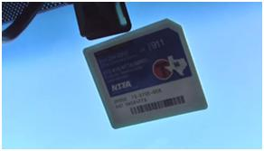

Automatic Toll Tax System
Get a Toll Tag
Sing UP Now!
You may create a Go Fast Tag account by clicking the Sign Up Now button below.
A commercial or fleet account is required if you wish to sign up a vehicle with more than two (2) axles or manage more than five (5) vehicles on your account.
For a commercial account, download the application using the button below or call the Customer Service Center at 1-888-468-9824.
International customers: Contact the Customer Service Center to enroll in Go Fast Tag by calling 001-214-210-0493 .
Go Fast Tag
Toll Tag Account
A Go Fast Tag account may include up to five (5) vehicles. All vehicles must have two axles and be assigned a TxTag.
Commercial or Fleet Account
A commercial or fleet account may have an unlimited number of vehicles.
For a commercial or fleet application, click the link below or call 1-888-468-9824 (International: 001-214-210-0493 ) to open an account.
- About us
- Terms
- Services
- More Info
- Links
- Feed Back
Join Us